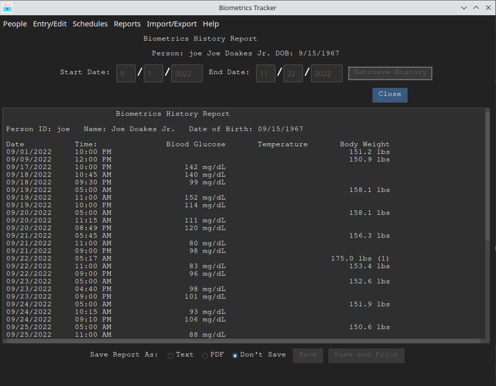

This report shows the selected person's data points within a selected date range. If you are tracking more than one person, you will be prompted to select a person whose data points will be shown on the report. Otherwise the GUI below will be displayed immediately after you choose the menu item.
Enter a date range and click the button. The retrieved information will be displayed in a scrollable frame at the bottom of the GUI, as shown in the image below:
The History report can be produced in two different formats; plain text and PDF. Note the radio buttons or at the bottom of the GUI. This will enable the and buttons. Clicking either of these buttons will display a Save As file dialog as shown below.
Navigate to the folder you want to place the report file in and enter a file name. Text report files should be named with a .txt extionsion and PDF reports should be named with a .pdf extension. The report will be written to the file name you specified. If you clicked the button, the report will be displayed in your browser and you can use the browser's print function to print it.